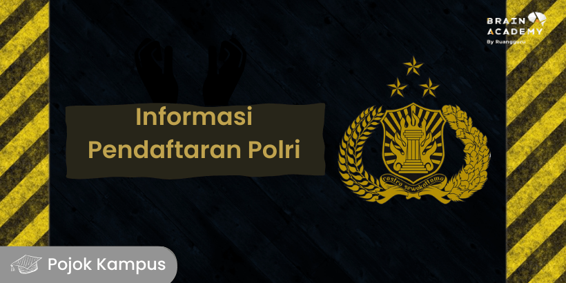

KEPOLISIAN NEGARA REPUBLIK INDONESIA

Jadwal & Syarat Penerimaan Polri 2023: Akpol, Bintara, serta Tamtama
Mau jadi anggota Polri tahun ini? Berikut informasi lengkap pendaftaran Akpol, Tamtama, dan Bintara.
Ada kabar baik nih buat kamu! Kepolisian Negara Republik Indonesia kembali membuka jalur pendaftaran. Seperti yang kamu ketahui, ada 3 golongan kepangkatan Polri, yaitu Akademi Polisi (Akpol), Bintara, dan Tamtama. Bagaimana cara mendaftarnya? Berapa banyak kuota yang tersedia di tahun ini? Yuk,kita simak informasi lengkapnya!
Jadwal Pendaftaran Penerimaan Polri 2023
- Pendaftaran online dan verifikasi: 04 - 14 April 2023.
- Penandatanganan pakta integritas dan sumpah panitia, orang tua, serta calon anggota: 13 - 17 April 2023.
- Pemeriksaan administrasi awal, pengumuman, dan pengiriman hasil: 13 - 18 April 2023.
- Pemeriksaan kesehatan I, pengumuman, dan kirim hasil: 26 April - 10 Mei 2023.
- Pemeriksaan psikologi, pengumuman, dan kirim hasil: 11 Mei - 22 Mei 2023.
- Uji akademik, tes kompetensi keahlian (bagi bakomsus), pengumuman, dan kirim hasil: 23 Mei - 02 Juni 2023.
- Pemeriksaan administrasi lanjutan: 26 - 30 April 2023.
- Sidang menuju rikkes: 09 Juni 2023.
- Pemeriksaan kesehatan II, pengumuman, dan kirim hasil: 10 - 17 Juni 2023.
- Uji jasmani dan anthropometrik, pengumuman, dan kirim hasil: 12 - 22 Juni 2023.
- PMK dan ripski II, pengumuman, dan kirim hasil: 16 - 25 Juni 2023.
- Pemeriksaan administrasi akhir, pengumuman, dan kirim hasil: 19 - 30 Juni 2023.
- Supervisi calon Bintara dan Tamtama: 26 - 30 Juni 2023.
- Sidang akhir kelulusan Akpol: 23 Juni 2023.
- Sidang akhir kelulusan Bintara dan Tamtama: 05 Juli 2023.
- Masa jeda calon Akpol: 24 Juni - 06 Juli 2023.
- Masa jeda calon Tamtama dan Bintara: 05 Juli - 24 Juli 2023.
- Akpol tiba di Semarang: 07 Juli 2023.
- Bintara dan Tamtama tiba di SPN atau Pusdik untuk memulai pendidikan: 25 Juli 2023.
- Akpol memulai pendidikan: 2 Agustus 2023.
Syarat Penerimaan Polri 2023
- Beriman dan bertakwa kepada Tuhan Yang Maha Esa.
- Setia kepada Negara Kesatuan Republik Indonesia berdasarkan Pancasila dan Undang-Undang Dasar Negara Republik Indonesia Tahun 1945.
- Pendidikan paling rendah SMU/sederajat.
- Pendidikan paling rendah D3 jurusan Kebidanan, Keperawatan, Farmasi, Keperawatan Anastesiologi, Kesehatan Gigi, Radiologi dengan IPK minimal 2,75, untuk Bintara Kompetensi Khusus Tenaga Kesehatan (Nakes).
- Usia minimal 18 tahun (pada saat dilantik menjadi anggota Polri).
- Sehat jasmani dan rohani.
- Tidak pernah dipidana (dengan menunjukan SKCK).
- Berwibawa, jujur, adil dan berkelakuan tidak tercela.
Cara Daftar Anggota Polri 2023
- Membuka website penerimaan anggota Polri yaitu penerimaan.polri.go.id.
- Memilih jenis seleksi pada halaman utama website.
- Mengisi formulir registrasi secara lengkap dan benar.
- Setelah berhasil mengisi formulir, pendaftar akan memperoleh nomor registrasi online, beserta username dan password.
- Unggah berkas pendaftaran yang disediakan.
- Melakukan verifikasi di Polda atau Polres setempat dengan membawa hasil cetak form registrasi online.